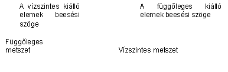
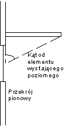
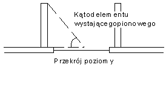

B.3. A szezonális energia szükséglet számításai
Az Instal-heat&energy program képes elvégezni egy adatkészlet számára a hõveszteségek, valamint a szezonális hõszükséglet számítását is. Két számítási módszer ilyen formában történõ összekapcsolása egy programban csökkenti a terv elkészítéséhez szükséges felhasználói munkaráfordítást, viszont a másik oldalról az adatok igényes elõkészítését követeli meg, egészen a program által használt alapértelmezett adatok átnézéséig és ellenõrzéséig. A hõegyenleg helyes kiszámításához szükséges belsõ hõnyereségeket is meg kell határozni, amennyiben ilyenek fellépnek az épületben.
A szezonális energia szükséglet számításai az EN 832:1998 szabvány alapján vannak végrehajtva. Ezek a számítások a programban opcionálisak – ki lehet õket kapcsolni.
- Az épület hõfelhasználásának értékelése a fûtött helyiségek a fûtési szezon alatti állandó hõmérsékletének feltételezésén alapul (stacionáris fûtés).
A program számításai nem veszik figyelembe a fûtési rendszer veszteségeit vagy hatásfokát, ezért az így számított szezonális energiaigény ténylegesen az épület szezonális hõszükségle. A szezonális hõszükséglet nem veszi figyelembe az elsõdleges energiát, ami a hõforrásnál szükséges a fûtési rendszernek az elosztásból, továbbításból, a fûtési rendszer beszabályozásából valamint más okokból származó minden veszteségének fedezésére. Ezért az energia szükséglet alatt ezen instrukció a szezonális hõszükségletet érti.
Az épületben lehet néhány, különbözõ számítási hõmérséklet értékekkel , valamint különbözõ belsõ vagy külsõ hõnyereség intenzitással jellemezhetõ hõövezet.
A hõegyenleg összetevõi
Az energia egyenleg az alábbi összetevõk feltételezés van meghatározva:
- a hõvezetés és szellõzés általi veszteségek a külsõ és belsõ környezet között
- a hõvezetés és szellõzés általi veszteségek az épület övezetei között
- a belsõ forrásból származó hasznos belsõ nyereségek
- napsütésbõl származó hasznos nyereségek
Az épület szezonális hõszükségletének számítási procedúrája a következõket tartalmazza:
- a klimatikus adatok deklarálása
- a helyiségeknek fûtöttként vagy nem fûtöttként való definiálása
- a méretezési hõmérséklet meghatározása
- a helyiségeknek a hõövezetekhez való hozzárendelése
- az épület adott idõbeni veszteségeinek számítása
- a belsõ hõnyereségek számítása
- napsütés miatti nyereségek számítása
- a teljes hõnyereségek kihasználási együtthatójának számítása
- az adott idõbeni hõszükséglet számítása
A fûtött tér határainak és övezeteinek meghatározása
A fûtött tér határait a falak, a legalacsonyabb padló, valamint a födémek vagy tetõk alkotják, amelyek elválasztják a vizsgált fûtött teret a külsõ környezettõl, valamint a szomszédos fûtött-, vagy nem fûtött terektõl.
A fûtött teret hõövezetekre lehet felosztani. Ha viszont a fûtött tér az egész területén egyforma hõmérsékletû, valamint a fellépõ belsõ és külsõ nyereségek viszonylag kicsik, vagy az épület egész területén egyenlõen vannak elosztva, akkor a számítások egy hõövezet véve kerülnek elvégezésre.
Amennyiben az épületben eltérések lépnek fel ezektõl a feltételezésektõl, akkor a helyiségeket néhány hõövezethez kell hozzárendelni. Ez a szezonális hõszükséglet számítás helyes eredményeinek egyik feltétele. Fontos, hogy egy csoportban a hasonló belsõ és külsõ hõnyereség intenzitású helyiségek szerepeljenek. Ezek egyforma hõmérsékletû helyiségek kell, hogy legyenek.
Jelentéktelen eltérésnek számít ettõl a szabálytól a fürdõszobás lakásoknak egy hõmérsékleti övezetkénti értelmezése. Így a hõövezethez tartozás ilyen formájú deklarálása nincs jelentõs hatással a számítás eredményére, viszont az alábbi elõnyöket biztosítja:
- szezonális energia szükséglet számítása a lakások számára,
- a program általi szellõzési levegõ egyenleg számítás a lakásokra is
Nem szabad viszont egy hõövezetbe venni fûtött (a kívánt belsõ hõmérsékletû) és nem fûtött (a program által kiszámolt belsõ hõmérsékletû) helyiségeket.
Az épület adott idõbeni hõveszteségeinek számítása a teljes hõnyereség kihasználási együttható felhasználásával.
A program a havi számítások módszerét használja, ami lehetõvé teszi a hõszükséglet számítást a fûtési szezon minden hónapjára.
Az elfogadott számítási algoritmus meghatározott hõcserét feltételez az adott hónap alatt i figyelmen kívül hagyja az akkumulált, vagy a napi gyors hõmérsékletváltozások eredményeként a helyiségnek átadott hõt. A számításokban figyelembe vesszük a h együtthatót amelyik teljes hõnyereség kihasználást reprezentálja.
Az egyövezetes épület vagy az egy hõövezet (lakások) hõvesztesége a számítási szezon alatt a szellõzési, valamint a külsõ környezet, más hõövezet vagy a nem fûtött terek felõl történõ hõvezetés általi veszteségeket tartalmazza. A programban a szellõzési veszteségek számításánál, a higiénia, valamint a komfort miatti minimális elvárt levegõcsere van figyelembe véve. Ez 0,5 csere óránként a hõövezet számára.
A teljes hõnyereségek számításai – a napsütés hatása, valamint a belsõ nyereségek
A számítási algoritmus eltekint a nem átlátszó válaszfalak napsütés miatti hõnyereségétõl. A programban a napsugárzást befogadó felületként kizárólag az ablakokat vesszük.
Az üvegelemek effektív gyûjtõfelülete, pl. az ablakok, a gyûjtõ felülettõl, az árnyékolás miatti korrekciós együtthatótól, a napsugárzási együtthatótól, a keretek együtthatóitól, valamint a teljes napenergia átengedéstõl függ.
Az árnyékolás miatti korrekciós együttható a napsugárzás csökkenését veszi figyelembe az olyan tényezõk keletkezésének esetén, mint:
- más épületek általi árnyékolás
- topográfiai tényezõk miatti árnyékolás (dombok, fák)
- kiálló elemek
- az ugyanennek az épületnek a más részei miatti árnyékolás
- Az együtthatók értéke az árnyékoló elem árnyékolási szögétõl függ.



Az árnyékolási együttható az ablakok számára meg van adva. Függ az függönyök típusától, valamint az elhelyezkedésüktõl az ablak belsõ vagy a külsõ oldalán.
Az épület szerkezetének fizikai méretei
Az épület szerkezetének fizikai méretei mindenhol meg kell, hogy egyezzenek a számításokkal. Lehet használni belsõ, külsõ vagy teljesen belsõ méreteket, de méretezési módot meg kell tartani minden számításnál. További információt errõl a témáról melléklet: tartalmaz.
Padlók a talajon
A szezonális hõigény számításai az u.n. „jellemzõ padló méret” kiszámolását követelik meg. Úgy definiáljuk mint a padló felületének és a padló fele kerületének a szorzata:
B = A/(0,5 P)
A padló kerületeként az épület kerületének az adott hõövezetetre esõ külsõ falak mentén számolt részét kell érteni. A talajon fekvõ padló kerületét a Felhasználó önállóan kell, hogy meghatározza minden hõövezet számára. Amennyiben a tervben néhány hõövezet vagy (és) nem fûtött övezet szerepel, akkor a talajon fekvõ padló kerületét az övezet határán vagy (és) az övezet és a nem fûtött tér határán lévõ falak hosszúságával csökkenteni kell.